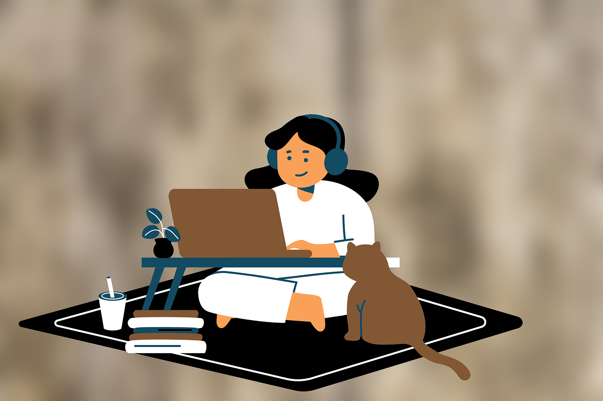

Por que você deveria aprender inglês?
Existem diversas razões, tantas que você deve estar cansado de ouvir rsrs... mas e se a maior razão para isso fosse a sua liberdade? Imagine conhecer ou aprender qualquer coisa que você quiser, mergulhar em livros, filmes e culturas que antes pareciam distantes. Dominar este idioma com certeza será uma transformação incrível em sua vida e, se você acha que é muito difícil ou impossível, continue lendo e descubra como este simples site pode ser sua principal ferramenta de estudo!
Preciso de algum pré-requisito?
O único pré-requisito é entender como o aprendizado funciona (que é exatamente o que você vai aprender 😉), na verdade, esse é o fundamento que vai te guiar até a fluência, pois isso não é um curso de inglês, mas um guia prático de como aprender, além de abrigar diversos conteúdos organizados por nível e de forma gratuita. Além disso, você precisará seguir uma pequena rotina de estudo diário, sendo definida por você conforme a recomendação.
